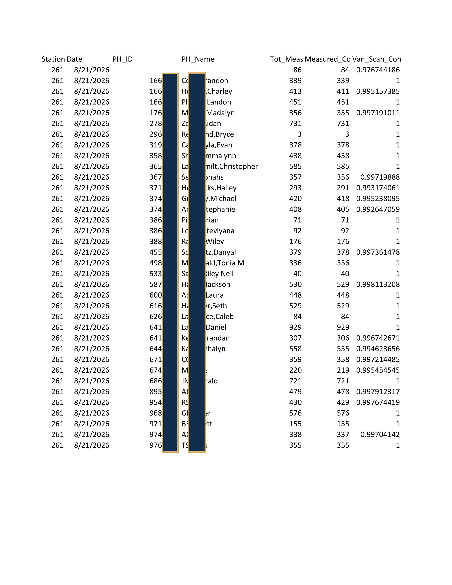
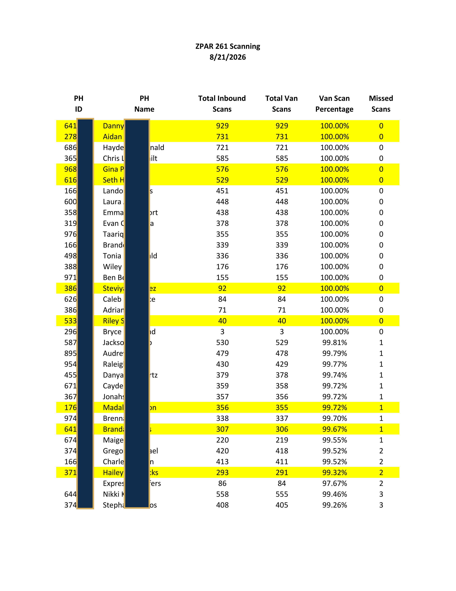
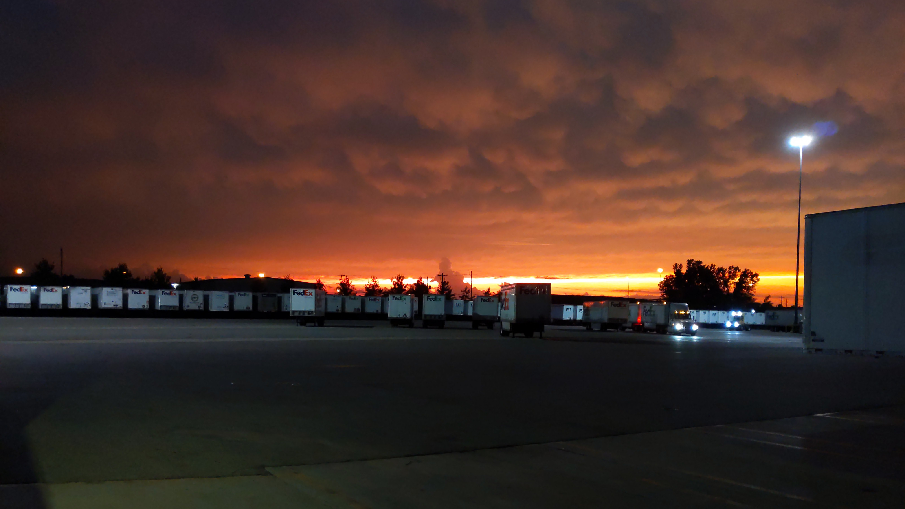

6 Years at FedEx
My FedEx Timeline
January 2017 - August 2017
- 18 years old, 2nd semester of college, my mom told me to join a club or get a job... clubs don't pay you to show up though.
- Worked at the COLO 432 hub in a load area where I loaded trailers.
- Brought into a successful culture, seeing as the area of ~15 people had 5 future managers working as package handlers at the same time.
- After losing access to my ride on day 3, I would be unable to continue at FedEx, but my manager “volun-told” another package handler (current P&D Manager) to drive me to work, which he did for the entire semester.
- Left FedEx at the end of summer to focus more on classes.
May 2018 - July 2020
- Came back to FedEx after discovering I, counterintuitively, did better in school while I was working.
- Placed in a new load area where I worked as the “Belt Guy”.
- Sorted through the ICs moving along a belt and picked off the ICs that went to my load area. I became very good at this and even started to gain a bit of muscle.
- Learned how the area ran and would be the “go-to” package handler to speak with whenever we had a vacation manager running the area.
- In 2019, a future SR. Manager became my Operations Manager. He was a major influence and did a lot to prepare me for a promotion of my own.
July 2020 - November 2021
- I was promoted to Operations Manager for my final year of college and juggled 35+ hr workweeks while still being a full time student.
- I spent ~8 months managing a load area, ~1 month managing an unload bank, ~2 months as a vacation manager, and ~5 months managing the smalls area.
- I enjoyed being a vacation manager because I was able to meet a lot of new people and get experience in different parts of the building, and the smalls area gave me full control over the unloading, sorting, and bagging of smalls, as if I was running my own small building.
- Upon graduating, I applied for an engineering position with FedEx, and a position 1 1/2 hours away with an architectural consulting firm. I got one, but not the FedEx position, so I left the company.
December 2025 - May 2026
- I left my engineering job because I wanted to first gain experience working with my hands to form a better understanding of the construction industry from the bottom up – hence why I started building my house.
- I always missed my time at FedEx and finally decided to return after 4 years as a package handler at ZPAR 261.
- In the short time, I did everything that I could to understand as much of the building as possible. I would unload towers, man the sort tower, load the Closed/Hold trailer on Saturdays, and help QA regularly.
- I was unsure about my prospects of moving back up in the comnpany until the sort manager at the time asked me if I was interested in moving into engineering and/or management positions.
May 2026 - Present
- I was offered and accepted a position as Operations Supervisor.
- Being at a smaller station, as opposed to a hub, has allowed me to wear more hats and understand how the operation works as a completed system.
- A main priority of mine has been to use excel automation to make tasks both quicker and to improve the way information is communicated.
Going Away Parties in the Smalls Area

A package handler from the smalls area was moving to Tennessee and the others threw him a small going away party. I got cake smeared on my face... the culprit is pictured.

The smalls area threw a going away party for me, as well, as I prepared to move to Athens. I enjoyed all the nice messages in the card.
Creating Job Aids for my Load Areas at COLO 432

My job as a package handler at Fedex Ground required me to scan each package and sort it according to its destination trailer. It is fast paced, and can be made more efficient if scanning is eliminated. Over time, I familiarized myself with every trailer destination and the zip codes of the surrounding areas. As a result, I was able to correctly sort over 95% of the packages that came through entirely without a scanner. I was dedicated to helping others learn zipcodes as well, and I set out to find the best way to teach. Using photoshop, I created this map that shows a visual representation of the area's destinations and the zipcodes that went to that trailer.


These are examples of a "job-aid" that I made during my time as an Operations Manager at FedEx. I used it every day to organize my thoughts and figure out what package handlers I would place where. The second two images are examples of how I actually used it. Though it may look like a bunch of scribbles and arrows, I had my methods down to a science and it helped me greatly when setting up for the start of the shift.
Scan Compliance - Cleaning Up (And Automating) Presentation of Scanning Data to Package Handlers at ZPAR 261
Ensuring that we scan all of the packages that we load onto the delivery vans is important. It gives the recipient information on his package and tells the driver that the package is on the truck. When we miss van scans there is a high chance that those packages don't get delivered. At the start of the day the package handlers are provided with the scanning numbers from the previous day. This was the first project I worked on after becoming a supervisor, and my goal was to make the information as easy to understand as possible.
The Problem

Above is an example of how we were presenting that information to package handlers when I became a supervisor. It is the raw data from the excel workbook, just with some of the columns narrowed to get it to fit on one page. The first column after the name is total packages that the employee should have scanned, the second is the number of packages he actually scanned, and the last column is the scan percentage presented in the least readable way possible.
The Solution

I created an excel workbook that takes the raw data as an input and automatically sorts and formats it. Our goal is to scan at least 99.25% of all the packages that come through the building, but I felt that in terms of providing the data to the package handlers it would be more digestible to just count total number of missed scans. For that reason, I first sort by number of missed scans, with 0 missed at the top. Then, I secondary sort by total number of scans. That way those who scanned the most packages while missing the fewest are at the top of the sheet. In the building, we have four separate van lines, so I've set up the workbook to create 4 copies, with each one highlighting the package handlers for that line. This allows us to very quickly tell that the 100 belt on this day had many of the best scanners in the building while also having a few at the bottom, missing 4 scans total.
Van Scan Accuracy Failures - Automating the Daily Email Sent to the District Engineer at ZPAR 261
One of our daily tasks is to send an email to the district engineer with our "Van Scan Accuracy Failures". My understanding is that these are packages that were scanned to one truck (the truck the system assigned the package to), but delivered by a different truck, indicating that the contractor moved the package. On the Operations Supervisor level, though, our concern is not to fully understand it, but just to send the information from the excel workbook to the engineer. I felt that this task would be a good candidate for automation due to the fact that it's something we do daily and due to the unchanging format of the email.
The Problem

Originally, we would accomplish this task by first opening the workbook from Sharepoint. We would then filter the workbook header by our station number. Next we would sort by delivery WA. After pulling up our email, we would then skim through the workbook and type every delivery WA and scanned WA combination with more than 6 or so instances. This would take around 2-3 minutes to complete.
The Solution

The macro that I created, upon pressing the button, automatically opens the workbook from Sharepoint (The workbook changes every day, but the only difference in the name is the date). It then creates a new sheet that displays every Work Area with scan accuracy failures and shows how many instances there were Lastly, the macro opens up Outlook, with the email fully drafted; All I need to do is hit send. In this example, it took 14 seconds from start to finish.
Attendance Documentations - Automating Creation of Write-Ups for Absenses at ZPAR 261
Documentations for absenses is one of the most important things that we do on the Operations Supervisor level. It's a sheet of paper that gets printed and is signed by the package handler. Providing a package handler with a documented discussion to sign after he called off the previous day is at least some deterrent from having him do it again. When things get busy, though, it seems like attendance enforcement is counterintuitively one of the things that gets pushed to the side.
The Problem

The process for creating attendance write-ups when I started was to first open up a blank copy of the pdf. It has fields that you can type into. I would then type the employee's name and date at the top. Then I would need to lookup the employee's ID number in the timekeeping system, which always seems to take a long time to load. For the offense description and follow up fields, I would then go to my email, where I would open a message that contained some templates that I would copy paste into the pdf. I would still need to update these templates with the employee name and date, but after that I would be ready to print. The first write-up would take around 2 minutes, but subsequent write-ups would take about 30 seconds.
The Solution

From the time I started, I knew that I would want to automate the documentation creation in some way. In this example, I used fake names, but my Excel workbook has a list of all the package handlers and their ID numbers. While the workbook is opened, you just have to check the box of all the employees who were absent. By default it is set to "Unexcused Absense", but it a drop down box allows for "No Call No Show" as an option, which has an effect on the offense description. The date of the incident can be changed but is set to today's date by default. When the macro is run, the fields within the pdf form are automatically filled, and they are saved. After that I do have to open the saved documents myself and print them, but automatic printing is in my future plans. In this example, I was able to create two unexcused absence documentations and print them in about 35 seconds, but I could have created just as many in the same amount of time.